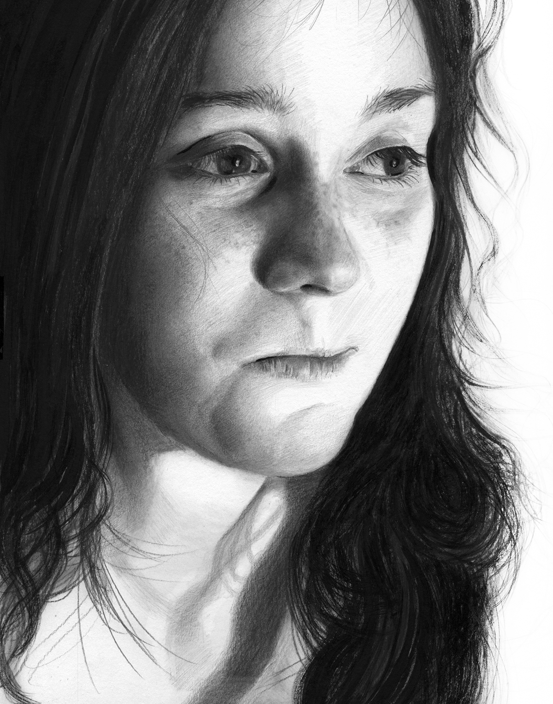
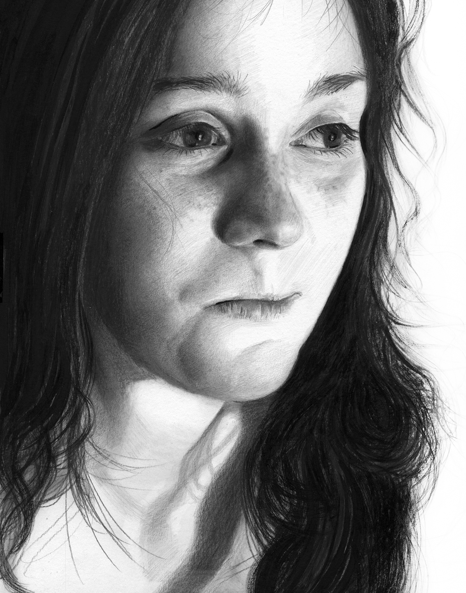

![5/100 Paul is a tall and skinny guy works at a fancy restaurant near the art gallery where I work. He is always smoking and eating junk foods on the street during his breaks. One day I finally got to talk to him and he said: “I’m 21, born and grew up in Toronto, besides woking here as a cook, I run a small recording studio and the business is getting more and more established. To save my time, I keep my wardrobe small and dress only in black. This habit was inspired by Mark Zuckerberg (who buys many t-shirts that are exactly the same)! I also read lots of business articles and entrepreneur’s interviews. This full-time job is to pay bills while I’m reaching my goal as a musician/producer.†I remember how his eyes were so full of innocence, sincerity and excitement saying these lines! After our short encounter, I switched to a different location to work and never see him again. Phoned the restaurant but was informed that he quit. Guess I can’t get more of his stories but I wish he’s now running the studio full-time with his music dream blossoming. 🎹](images/Paul.jpg)

![13/100 ''…I know because I’ve wandered off, thousands of miles from what I already knew, to places where it would be so so easy to feel alone. Places where my my language was of no use, where cell phone signal was as common as a unicorn sighting; where familiar was something you’d crave like your favourite drug. And I survived. More than that, I learned to love those moments. It wasn’t always easy. And It still isn’t. But when you really stop and get honest, you are NEVER alone. We are a collective. Every moment you’ve shared with another human can continue to exist within you if you want it to. And what’s really transformed my life is figuring out that if you can find a way to walk with that invisible army of friends and lovers and hearts behind you, not only will you not be alone, but there’s a line-up of gorgeous, new soldiers that can't wait to enlist. Learn to love you, all alone, and people will wage war in your favor. Sitting there, in that moment, I had no proof that I would make it to where I am today. But in just one tiny year I’ve become a certified yoga practitioner, wandered up the Himalayas, re-started my acting career, starred in my first commercial and film, become a business owner & mentor (which has now expanded to a team of five incredible women!!), learned to love again, co-founded a successful charitable initiative and community platform and am about to take off to Las Vegas, DC and New York where I will continue to expand my business, my relationships, and most importantly, myself. I share all that only because I want you really know that we're alone in only one thing, and that’s creating a vision of what we want our lives to look like: How big and how beautiful. THERE'S NO LIMIT.… If you can dream it, you can do it. Your thoughts really do become things! So why not take today to think about what’s really possible? Because I promise you, IT IS POSSIBLE. It might not feel like it. It might be a terrifying and trying journey, but the only thing that might be more painful... is never actually trying at all. You’re not alone. Go get 'em.†- Helen, entrepreneur/actor/ writer Toronto/New York 💋](images/Helen.jpg)
![17/100 ''Despite the fact that I exhausted myself financially and emotionally from my ex-husband and his new family from China, I could never stop helping them. It's how I was raised. I can only work hard and stay positive for my children despite the trauma--the divorce and debts from my ex. I choose to be positive, hardworking and helpful for the hope that my daughter will step out from the shadows of her childhood.'' - Amy, secretary/ single mom with two children from Taiwan, lives and works in Toronto. ☔ï¸](images/Amy.jpg) 

![29/100 ''All I can say is I was going through a transition and I was deeply aware of the shift which made it that much more intense. Did I know this light was at the end of the tunnel? No! The coolest part is that the universal truths have been revealed to me - the darkest part of night is just before dawn breaks. My name in Hebrew means 7th daughter, not because they ran out of names but because as my dad says ''all sevens are beloved''. We just had a reunion last week, all 14 of us together celebrating the weddings of two sisters :) first time in 15 years and you would think things changed, but mostly we all just took our own places in the family as were the good old days :) After many years travelling the world and getting to know myself better, what I've learned most is there's nothing truer and greater than arriving home.'' - Shevy, Jewish healer/businesswoman/wonder woman from Sydney, Australia ☀️](images/Shevy.jpg)
![34/100 Jessica has been a close friend for 12 years. She told me she wanted to be a CEO when she was 16. At age 26, she started to work for her father’s business in China. As an adult, she has become the epitome of every girl’s dream: well-educated, beautiful, and wealthy. Recently, she took a hiatus from her job to experience my world as a part time artist. During her stay, I could sense the tremendous pressure she feels from operating a multinational business in China. Neither by her demeanour, nor by her social media feed could one detect from her even the slightest trace of anxiety or pressure-- but it is there. Her wish is to share my freedom to breathe and to tune out the complex web of social networks that underlie commercial China. ''When it comes to running a business in China, I have to keep my ears and eyes open 24/7 to adopt this fast-changing and dynamic environment. There are many appealing business opportunities and investments around us everyday. People in China are hyper active. I've met many CEOs who are about age 30. The key factors making them succeed are a bit of money, plenty of opportunities and full of guts. As a future successor of a growing global enterprise, I am expected, forced to learn and act like a leader at age 27. I fully devote myself into work, ignore my fear, doubts and anxiety, and try to grow as fast as I can. I am not sure if this is the right direction but I have no time to think. An ideal day to spend would be being alone in my own European-style space, and blocking myself from work, expectation and responsibility. I would read, lay back, and enjoy my favorite Earl Grey tea with dark chocolate to create a scenario as if I wasn't in China.'' Jessica, CEO from Taiwan, now lives in China ☕️](images/Jessica.jpg)
![2/100 ''I've thought about this numerous times. Rather than changing anything, I've embraced it all and believed in karma. What goes around comes around. I've seen Karma come after everyone eventually. How people treat you is their karma; how you react is yours.'' This powerful woman sacrificed her entire youth to support both her own family as well as her second family- financially, emotionally and physically-- all while fearing that she might be sent away again. Early on, she was adopted by a poor peasant family as her original family couldn't afford to raise her. Since her early 20s, she faced ruthless shaming from her community because she chose to divorce an unfaithful husband. Life was difficult, but she kept silent and worked hard to educate her only daughter. There is no woman who cared for me and my sister quite as well as she did. For a woman who's sole reason for survival is to raise her child and care for her loved ones. I was never able to sense her suffering from severe depression because she never complained. An exceptional tailer, she was always sewing clothes, strewing them across the house in piles and piles. Life was extremely difficult for uneducated Taiwanese single mothers who belonged to the last generation. Taiwan's patriarchal society did not lend women much respect, and requiring them to work with their hands without rest. Despite her tight schedule, she exuded a wisdom and a unique grace— an incredible intelligence and determination to learn. It is from her that I learned creativity as well as several other life lessons. As she always says ''I pray for the people I love and the ones who have made wrongful assumptions about me. I hope the universe brings good karma and solves this negativity, leaving everyone with peace.'' 🐳](images/Aunt-Dada.jpg)

![10/100 Me: ''Fred, how could you manage to stay so positive and crack jokes all the time while being in a wheelchair in the hospital for so long?'' Fred: ''Ha, I discovered that I can't fly. I tried but it didn't work. I used to work with many staffs here from where I worked before. They all want me to put my name down to apply a job here. There are also lots of visitors and it's been wonderful. Jojo (his wife) visits me everyday for several hours and we go for walks. She pushed me in my wheelchair and thought I've lost some weight. The food in the hospital is too boring but I'll get a pass to have dinner with with my son next week. He's visiting me from Jasper.'' Me: What's the toughest time in your life? Fred:...(5 minutes passed by) I don't know! I'm having a wonderful life! Me: Okay, what's your saddest moment then? Fred: When Jojo and I traveled to India, we saw mothers begging with their babies. The babies were already dead. I didn't know for how long, maybe one or two days but they had to beg for food for other children. That's pretty much the worst thing to see. From our perspective, we have no idea and this goes on. 🌧](images/Fred.jpg)

![18/100 ''My mother passed away when I was a kid. This caused me to become hyper aware of my own mortality at a young age. Aside from this, I never really felt that her death impacted me the way death usually impacts people - to some extent I felt like it didn't impact me at all. This changed later in life when I realized just how much my life trajection altered without her being here. I often think of how different my life would be if she was alive- where I'd be living, the people I'd know, the type of personality traits I would have developed or gained from being around her. I'm often told I'm like her - calm and collected, but loud and boisterous when I want to be. She was attentive, and had a type of magnetism that made people want to talk to her - family members say I get that trait from her. The main issue that I struggle with at the moment is; explaining my situation to others. Just like anything else, no one will truly know your lived experiences unless they go through a similar scenario. To outsiders, I've tried explaining the balancing act I've had to do my entire life and the complexity of emotions within those of my immediate family. Despite my best attempts, no one truly understands to the depth I would like them to. There has only been one other person who understood the intricacy of being an only child with a single parent, and I thank them for entering my life the way they did. They made me realize that I'm not alone. I'm a firm believer in things happening for a reason, even when things turn to hell. I believe there is a purpose behind everyone you meet, everything you experience and everything someone chooses to do or not do. I live my life believing in a constant push and pull within the universe. That these forces that you may not initially notice, drive people to discover their purpose and life fulfillment. It's just up to individuals to take advantage of those forces when they strike. I'd like to think that her absence in my life has made me a stronger, more resilient, and more self-reliant person than I would have been if she was around...'' - Maria, entrepreneur/artist/wonder woman from Toronto 🌻.](images/Shiloh.jpg)
![22/100 ''We all feel with hearts <3 opening the heart is painful and multi-layered. every day I breathe to open mine more but the heart is the deepest chamber, and protected. My heartache, you awaken me with all of my love...I have felt lost many times, but once I choose to confront it -- I saw some clarity. My dream is to help as many as I can within my capabilities, and return to the city that I love -- NYC. I know if I stay focused, the dreams will come.†- Sophia from Toronto, Digital Project Manager at UCSF in the field of Psychosis Education/ Columbia University alumna. 🗽](images/Sophia.jpg)
![24/100 The fetal position - arguably our initial protective stance upon entry into this world - is generally assumed when wanting to minimize injury to the neck and/or chest, though hardly necessary as the precious little life is protected by its mother's womb. Similarly, maternal instinct calls for all mothers to step forward and protect their child, through to adulthood, teaching them, guiding them, protecting them. Such isn't everyone's draw for even the most innocent suffer the ripples of others' angers and anguishes, sometimes late into the evening, when even the comfort of the fetal position could not protect them from the blows. Later, much later, this subject learns to understand, he carefully accepts, cautiously softens, and slowly forgives. Though the physical scars have long disappeared, their marked expression in his ability to be vulnerable, and thus love and be loved, is shrouded in a veil of painful memories. Only time can heal this wound, time and the fetal position. Jeff is a sofatward developer based in Toronto](images/Jeff.jpg)
![30/100 ''I grew up in under the most encouraging circumstances. My family supported me in all my dreams. They taught me to love and respect myself. I was given every opportunity in and outside of school. I was blessed from the beginning but somehow I still managed to struggle along the way. I was teased about being 'fat' at school and proceeded to do everything I could to show I didn't care about my appearance. I didn't find ways to love my body but instead just found ways to appear like I didn't care. The more I pushed these feelings down and pretended not to care, the more it ate me up inside. There were times when I wished I was dead. Not so much that I wanted to end my life myself but that I just wish I didn't exist. When I had sex for the first time, it made me feel pretty for the first time in forever. I began to crave this type of attention and put myself in countless situations that were not only completely unloving but also dangerous. I was addicted to this feeling of attracting a man to desire me but when our encounter was over, I felt worthless and used. It was a terrible cycle. I had some loving boyfriends along the way but for the most part....I primarily put myself in terribly emberassing & degrading situations. Throughout it all, I would tell close friends that although I had many male lovers, I wanted to commit myself to another woman to raise a family with. No matter how many times I had this feeling of wanting to connect with a woman...I didnt know how to do it. The type of relationship I equated with a woman was set up high on a pedistal that I didn't know how to reach. I would never be smart enough or pretty enough to attract one. I didn't feel like I would be judged for being attracted to another woman but I had a fear that if I told people this is what I was pursuing actively and failed...I would look like a total looser. That people would say...'I cant believe she thought she was pretty enough to attract a beautiful woman. At one point I did try to express my attraction to a beautiful woman but my own self doubt made me not believe that the feelings weren't recipricated. To protect myself, I cut off communication with her as I was completely embarrassed and defeated. At age 33 I found myself in a relationship with a man that treated me sweetly, owning my own land among rocks, trees and lakes where I had a flourishing pottery business and ability to travel to inspiring places in the winters. Everything on paper looked great but life still felt unsettled. I felt constantly like I had to put up boundries from my partner to create the life I wanted. I was always trying to push him out the door on his own creative path. The beauty I had tried to express attraction to earlier entered back into my life and in an effort to regain a friendship, she confided in me that she really had been attracted to me years earlier. That conversation kept swirling in my head and heart until I felt like I could no longer breath. How could this be? What does this mean? If she was truly interested in me years earlier why did I convince myself she wasn't? She wasn't asking me to leave my current relationship but I couldn't stop thinking about the 'what ifs?' I finally decided to end the current relationship but not fully knowing what would happen with this woman from my past. I just decided that I couldn't live with the regret of never knowing what might have happened. It was heart breaking and heart expanding all at the same time. I used yoga class and the self love act that I associate with this practice as my therapist. It felt like it was the only thing that kept me together. I felt so vunerable as well as sad for the hurt I caused but I kept reminding myself along with the help of others that I just need to be true to myself. Although my life was good before....I deserved the type of loving relationship that I had always dreamed of. I know I made the right choice because life has expanded and blossomed in ways I could have never imagined! Instead of creating boundries with my partner, I encourage our working relationship. We have found a natural way to combine all of our passions into an incredible working relationship. I have to remind myself sometimes that life as I know it now was not always as it is. Life could have been quite different if I hadnt listened to my heart. I think that each time you trust your internal voice, the easier it can become. When something feels wrong to me now it is much easier to speak about because I have faith that things will work out for the best if I trust in myself. It is not always easy but easier and the more I do it, the more confident I become in the person I am.'' - Tara, pottery guru and gallery/studio/coffee shop owner ✨](images/Tara.jpg)
![3/100 ''The thought of anything bad happening to my mom makes me anxious. I worry that maybe she didn't drive home safely from work...maybe she forgot to lock the front door - lots of irrational thoughts. I jokingly (not so jokingly) refer this as onset adult separation anxiety. She's become aware of my anxiety (who wouldn't after getting 'you good?' texts at 4am). So when I text her now, she usually sends me something short and reassuring. Most recent one: no need for worries. All good here. You've still got me and my persistent prayers.'' - Bridget, graphic & web designer, born in Uganda, grew up in Switzerland and now resides in Toronto. 🏳️‍🌈 .](images/Bridget.jpg)

![11/100 “The election brought a lot of issues out into the open and made it easier to spot who falls on either side, but there's still so much prejudice that's hard to see if it's not actively happening to you. Aspects of how we relate to each other that are so ingrained, they're invisible. I think people are realizing that in order support each other and co-exist in a multicultural society we need to search these things out. Now more than ever, people are acknowledging the limits of their own perspective. They want to question the status quo, they want to be good allies, but they don't always know how. Art is an essential part of opening this dialogue.†- Lee Lawson, Toronto based actress and writer. 💃](images/Lee_Lawson.jpg)
![15/100 ''I am a 65-year-old mother of 3 and grandmother of 8. Born and raised in Tasmania, but have lived in Queensland since 1975. I have been a teacher and environmental manager and am passionate about growing local native plants. I established a botanical garden/ environmental centre to promote local plants and wildlife in 2000 called the Redlands Indigiscapes Centre. I am now retired onto a farm growing walnuts. I live to create paintings, quilts, natural dyeing, gardening, and fairies at the bottom of my garden. And the best thing I have ever done was canoe down the Yukon last year. I used to have problems in any confined area, movies, shops, buses, traffic jams. I am now a lot better and only have problems flying now. I practice mindfulness which really helps. The thing that most makes me happy is creating, particularly painting! I feel like I am flying after a day painting. I feel free when I let go of my guilty conscience telling me I am not entitled to take time off. This is my year of letting go and I think I am doing reasonably well.'' - Rosalie, teacher/environmental manager from Queensland, Australia 🌊](images/Rosalie.jpg)
![23/100 ''My parents have been married for almost 38 years and whenever I asked them the secret to their happy union, they always said compromise. Relationships, they said, were about two people taking a chance on each other and choosing to make it work, day after day, no matter what. With this in mind, I left a lucrative career in finance two years ago to follow my then boyfriend to the Netherlands, as he was offered a great work opportunity. It was the chance of a lifetime, but it wasn't long after we had moved that I realized something didn't feel right. Within just a few weeks, cut off from friends and family and any point of reference that ressembled home, I began to feel that perhaps I had made a mistake. I was rejected from multiple job opportunities due to my inability to speak Dutch and I slowly started getting discouraged. No matter, a new adventure was waiting for me and I convinced myself that compromise was the path forward to a long happy life, just like my parents. It's amazing the things we can convince ourselves of when we fail to put ourselves first. I slowly sank into a paralyzing depression, a state I stayed in for months. I stayed quiet about how I was feeling because I had chosen this path, and was embarrassed to admit I had made a mistake. Friends and family could tell that something was awry but I continued to hide the fact that I spent most days curled up in bed, unable to move or take action. It wasn't until 6 months later that I knew I couldn't continue living this way, cut off from everyone that had supported me my entire life - it happened all of a sudden when trying to confide in my partner about how I was feeling, that he told me it wasn't his job to support me if I wasn't able to help myself. This went against everything my parents had taught me with respect to relationships. More importantly, my understanding of mental health was such that I knew it was a physical manifestation that was beyond my control. Thankfully, I had the most supportive parents who insisted I had done nothing wrong but give life a try; they immediately offered me a plane ticket home and I flew home within just a few days, never looking back…Those first few months back, I was still convinced it was my fault, that I hadn't tried hard enough or held it together long enough to make it work. It took many streams of therapy and deep dives into my inner soul to remember that falling into depression was no fault of my own. It was as though I had to relearn how to trust myself, both with respect to my professional and personal abilities, in order to move passed what I had experienced. I had risked everything and failed - believing I wasn't a failure myself was the most difficult part of my recovery. Accepting that in life, we don't always make the right choices and it isn't a reflection of our capabilities felt impossible at the time. It has been almost a year to the day that I came back from Europe and I still don't know where I found the courage to pack up and leave an unhealthy relationship. At the time, I was broken and felt unworthy of love, I'd had my chance and lost it. It is only with the support of my parents and my dear friends that I learnt to rebuild and trust myself in a relationship again. Being acutely aware that I am hypersensitive to my environment was also part of my learning. Now, I find myself thriving once again, understanding that I can and should put myself first before giving to someone else. The reality of having suffered from depression is that the fear of falling back in is always there. Though the process was one of the hardest things I ever went through, I learnt so much about myself, my resilience, and my ability to forge a path for myself that I can respect and admire. Now, I wake up every morning and I am grateful for the support I have around me, for it reminds me that with a strong network of family and friends, I can conquer anything, even depression. - Farz, TD bank product manager grew up in Montreal, Brussels and now resides in Toronto 🍁](images/Farz.jpg)
![27/100 ''My mother passed away when I was a kid. This caused me to become hyper aware of my own mortality at a young age. Aside from this, I never really felt that her death impacted me the way death usually impacts people - to some extent I felt like it didn't impact me at all. This changed later in life when I realized just how much my life trajection altered without her being here. I often think of how different my life would be if she was alive- where I'd be living, the people I'd know, the type of personality traits I would have developed or gained from being around her. I'm often told I'm like her - calm and collected, but loud and boisterous when I want to be. She was attentive, and had a type of magnetism that made people want to talk to her - family members say I get that trait from her. The main issue that I struggle with at the moment is; explaining my situation to others. Just like anything else, no one will truly know your lived experiences unless they go through a similar scenario. To outsiders, I've tried explaining the balancing act I've had to do my entire life and the complexity of emotions within those of my immediate family. Despite my best attempts, no one truly understands to the depth I would like them to. There has only been one other person who understood the intricacy of being an only child with a single parent, and I thank them for entering my life the way they did. They made me realize that I'm not alone. I'm a firm believer in things happening for a reason, even when things turn to hell. I believe there is a purpose behind everyone you meet, everything you experience and everything someone chooses to do or not do. I live my life believing in a constant push and pull within the universe. That these forces that you may not initially notice, drive people to discover their purpose and life fulfillment. It's just up to individuals to take advantage of those forces when they strike. I'd like to think that her absence in my life has made me a stronger, more resilient, and more self-reliant person than I would have been if she was around...'' - Maria, entrepreneur/artist/wonder woman from Toronto 🌻](images/Maria.jpg)
![31/100''I've raised my three children here and they are all in their 30s now. Despite the fact that I couldn't fit into Canadian society, I managed to settle in Markham where I can deliver authentic Taiwanese bakery goods and provide immigrants a sense of home through my baking. When I feel anxious, I simply go drink a cup of coffee at a cafe and I immediately feel recharged. I work with other women who are also from my hometown. It's always very peaceful at my bakery.''- Lisa, bakery owner with 3 children (age 30+) from Toronto. 🍰](images/Lisa.jpg)
![33/100 ''I remember that day when my grandpa was teaching me how to take photographs with film cameras, we were sitting in the living room and he was having his afternoon coffee with my grandma when I was trying to learn how to shoot in poor light. Now when I look back to that photograph, I feel that it is one of the best photos, still I don’t know whether it is because I miss him or the photo itself but I know that if you do something with passion, you’re going to love it and succeed'' - photographer/artist Khaled Akil from Aleppo, Syria currently resides in Turkey 🌾](images/Khaled.jpg)
![4/100 ''I am a sensitive person. I feel really hard and feel easily. There's this quote that I think about that best describes me. 'It's both a blessing and a curse to feel everything so deeply'. I think that's the story of my life. The work I do, the life I live is centred around that. I feel guilty a lot...for not being supportive enough. I feel guilty when I lash out or get upset at someone. I think a lot; think about what I should have said or could have done. Sometimes I get so sad and I don't even know why. There's this from the huge injustices of the world to wondering about the slightest change in attitude of a loved one, I feel it all. It gets exhausting I must admit; but at the same time I feel good feelings deeply, too. My friends mean the world to me. I don't know who I would be without them. They contribute to my growth everyday. They make me laugh and know me. It's nice to feel known.'' - Hanan, Somali Canadian/model/counsellor/grad student from Toronto 👑](images/Hanna.jpg)
![8/100 Kanza Feris Kanza Feris is a performer, writer and producer. She has been performing for over 9 years and is proud to have some fantastic internationally produced projects under her belt including the multi award winning 'Surkhaab'. Recently Kanza has been part of Angelina Jolie's production 'The Breadwinner'. A versatile female actor with years of professional training Kanza excels both in drama and comedy. She is also a sought after voice actor for many animations and commercials.. Why did you decide to be a part of A Safe Space? Social Justice and equality is important to me. I wanted to be a voice for those who are not heard. The media mostly portrays the Islamic culture on a very negative tone and this project is showing the human side of Islamic culture. I believe it’s a radical yet brave step and I am honoured to be part of it.. What are your thoughts about your character, Hajra? I really feel for and in many ways identify with Hajra. She is a sassy girl whose true potential is untapped due to restrictions at home and unfortunate racism outdoors. She faces her struggles head on and is a brave and incredible female.. Link in bio to learn more about A Safe Space film!](images/Kanza_Feris.jpg)

![16/100 ''When I was 15, I was put on a bunch of medications for mood disorders - due to a variety of circumstances, it wasn't a closely monitored situation. The company who sold the meds was later convicted of pushing dangerous pharmaceuticals on vulnerable age groups ; elderly care patients and younger individuals. I fell into the latter category, and was prescribed a whole slew of shit. One of the known side effects which makes them dangerous is increased risk of suicide - and lo and behold, after almost a year of living in a foggy haze that I don't even remember (Grade 10!), I tried to kill myself.For ten years afterwards, I fought suicidal ideation; intrusive thoughts. It took me a long time to realize from the inside that I don't identify with those thoughts, even though they occur within *''my''* mindspace. During those ten years I questioned myself deeply. Did I really want to die? My heart told me no, but my mind told me yes. But my heart also told me to escape my thoughts as completely as I could, and for 4 years I buried myself in an online game from dawn to midnight. My total play time in those 4 years came to 600 and some-odd days, meaning abt 2 years spent in-game.When I quit that, I went out into the world, was raped, but couldn't find it in me to dive into the intellectual environment of school. I needed to live in my bathroom and paint, because when I was moving my hand across the canvas, I was not my thoughts of suicide. I was the blue, I was the yellow, I was the microdecisions that produced an aesthetic I could judge without guilt. When I came out west, the nature of my situation ('A Room of One's Own') allowed me to throw more of my thought into metaphysics, and the dissolution and deconstruction of the self that I loathed to the point of suicide. In a way, I did kill myself. I killed the parts of me that needed to die to make room for the woman I wanted to be... I realized that the microdecisions involved in art were the literal movements of my heart, which manifest real moments with great effect, rippling fractals into the future. It clicked for me that each moment is an opportunity to take control, to decide whether to push reality in one direction or another, just like whether to push the paint a little to the left, or whether to darken a shadow. These decisions are just as meaningless as a careless brushstroke, and just as beautiful. Life doesn't need meaning. Life can be Art, by taking ownership of every moment; grasping the swordhilt of true freedom. Choosing not to destroy myself was my commitment to push each moment to be the most aesthetically pleasing version of itself I could sense it could be, because that is the standard I hold myself to in order to balance the overwhelming weight of suicidal ideation with an equally weighted satisfaction at the aesthetic of my life. Only Love can outweigh all that black cynicism. So I seek to manifest an aesthetic of Love, and I never feel obliged to justify the process or the result. If I haven't died, the Love is self-evident. Now, suicide is the last weapon of freedom that I hold in my heart, reserved for political protest should that become necessary, if for instance I was under inescapable oppression and the true freedom of my life as an Artist, and my children's birthright to claim this freedom, were to be oppressed. I hold great power, and I know that I am not the only one who does. So, when my mind screams discerning that this disastrous world is too cruel and evil to live in, I don't kill myself; I create, to feed Freedom screeching like a harpy bitch for proof that it exists.'' Amy, editor and astrologist from Toronto 💫](images/AmyP.jpg)
![20/100 Q&A with Toronto's beautiful & strong actor/filmmaker/model - Mouna Traore. What picks you pick when you are low? M: ''Writing in my gratitude journal always picks me up when I am low. I usually write 3 things I’m grateful for, 3 things I want to create, and 3 things I want to release. When I express gratitude I find that life gives me more to be grateful for, and my focus shifts to my blessings rather than my problems.'' . 🌎Your saddest memory? M: ''I have too many sad memories. I don’t think I could choose just one. And they all seem to weave together to form a tapestry of sadness that’s always blanketed my life.'' . 🌏What makes you smile? M: ''What makes me smile is the thought of lying in the sun by the ocean. That’s my happy place.'' 🌞](images/Morna.jpg)
![28/100 When May divorced an irresponsible ex husband and ran her own business in a suburb near Shanghai, people always rumoured about her private life. Past age 30, a woman in China expires in the eyes of her peers. Rather than treated with due respect, single mothers are commonly frowned upon.Fortunately for May, she came from a wealthy family, who supported her passion for conceptual art. She made the decision to move back to Vancouver, finally severing ties with a society which never granted her belonging. People in China neither understood her nor her art. Unlike most of Vancouver's Chinese upper class, May never felt the need to show off her designer goods nor to buy into the ever-popular luxury lifestyle. Similarly, she didn't share the other women's obsessions with everlasting youth, and shied away from widespread self-beautification techniques. She's sought ways to establish her own business in a manner suitable for her son and her talent in fine art. At all times she has remained a humble and caring friend. It is this from which her beauty derives. ''During the years I lived in China, people didn't pay much attention to my talent or ability but rather gossiped about my private life, my marriage and my age. I chose not to go with that flow. I've never regretted having my son, he's the best thing that happened to me and I don't need another man to support me because I'm strong myself.'' - May, single mother/business owner from China now lives in Vancouver. 🌲](images/May.jpg)
![32/100 “I can give you a little run down on my background related to Toronto. My ethnic background is half Lebanese and half British. I am originally from the West Coast (Kelowna/Vancouver) and I moved here around six years ago to U of T. I don't find I've really stuck to one ''group'' or ''type'' of people here and I actually find people in Toronto generally more approachable than people from Vancouver. When I was in middle school I dealt with a lot of bullying. I was picked on because of the way I looked. I didn't have a lot of friends in my middle school and also didn't feel like the kids who were there had the same ambitions as I did. For those reasons, I went away to a boarding school and became part of a community that was so kind and accepting towards everyone. Throughout high school I started to gain confidence and become more comfortable in my own skin. Nowadays, none of the bullying I face ever fazes me and I know that I am a much stronger person because of it. I'm not someone who has always had it easy and I think that it is important for anyone who has dealt with being picked on or teased to know that things do get better so long as you remain strong and believe in yourself.'' - Ciara, Lebanese blogger/ marketing and communications profession for a Canadian charity, Toronto 🌹](images/Ciara.jpg)
About Me

Alicia Chen
Alicia Chen was born in Taiwan and became a new immigrant to Canada in 2015. Chen’s art journey started internationally from Taipei to Vancouver, New York to Toronto, where she presently resides. Chen spends much of her time collaborating and working with art professionals from recognizable institutions and building strong relationships within the art community. Based off of her rich and unique life experiences as an artist, art educator, young business entrepreneur and curator, she creates artwork cemented in the act of storytelling, showing unique capability for capturing the essence of her subjects. For Chen, art is a way of visually documenting her life through the connections she forms and infusing it with meaning. Art is a way of evolving oneself and empowering the minority. With her art gallery curating and marketing background, she is also as an active curator in Toronto’s Asian Canadian communities involving in conducting and coordinating cultural events and film festivals between Taiwanese bureaucracy and Toronto-based charity and nonprofit organizations where she aim to bring diversity together and to make social changes.
Tell me your stories: alicia100faces@gmail.com
Join my art journey: www.instagram.com/100faces/
Goals
🌱 Toronto curator/artist
🌿 drawing 100 faces
🌲 sharing 100 stories of struggles and triumphs